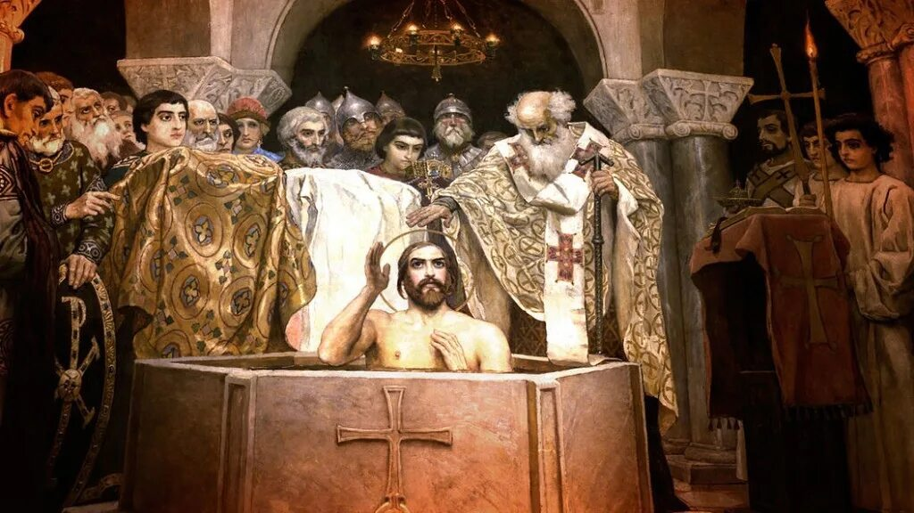
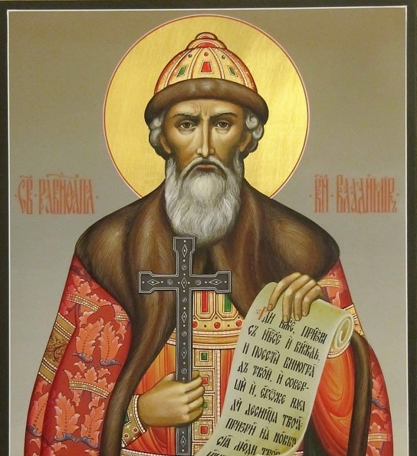
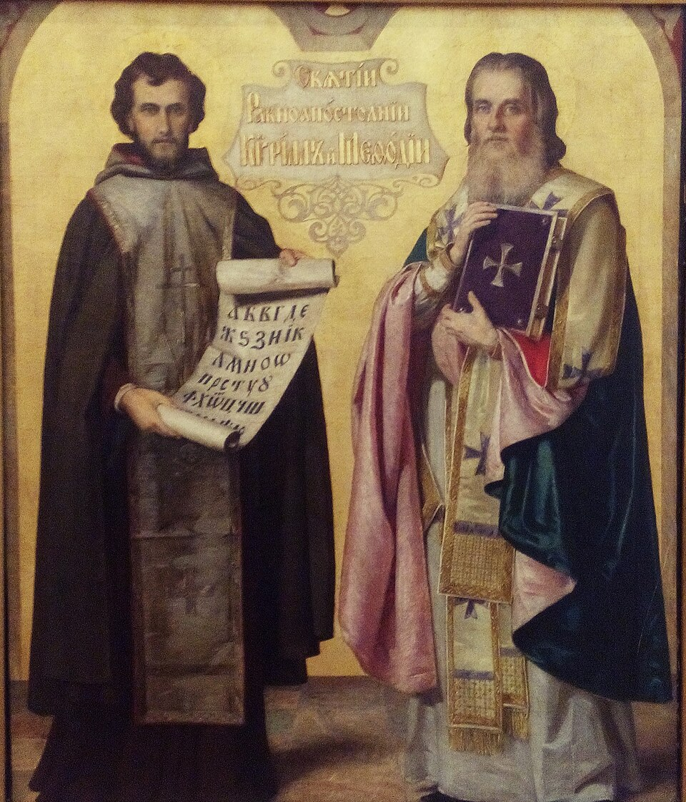
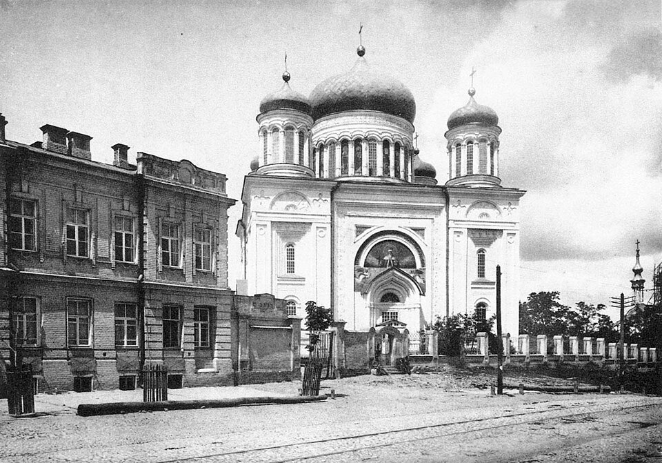

Принятие христианства (988 год)
Крещение Руси
Принятие христианства князем Владимиром в 988 году стало поворотным событием в истории Древней Руси и кульминацией русско-византийских отношений X века. Это решение было подготовлено всем предшествующим развитием контактов Руси с Византией — торговлей, войнами, дипломатией и постепенным проникновением христианской культуры [[36]].
Согласно летописи, Владимир отправил послов для изучения различных вер: ислама (у волжских булгар), иудаизма (у хазар), западного христианства (у немцев) и восточного христианства (в Константинополь). Послы, побывавшие в храме Святой Софии, были поражены красотой богослужения и убедили князя принять именно православие [[37]].

Предпосылки принятия христианства
- Политические: необходимость укрепления государственной власти, повышение международного авторитета Руси
- Культурные: влияние византийской культуры через торговлю и дипломатию
- Личные: крещение княгини Ольги (957 г.), присутствие христиан в дружине
- Династические: брак Владимира с византийской принцессой Анной — сестрой императоров Василия II и Константина VIII
- Идеологические: язычество не отвечало потребностям единого государства с централизованной властью
- Военные: помощь Византии в обмен на крещение (варяжский корпус для императора Василия II)
Последствия для Руси
• Создание единой идеологической основы государства
• Развитие письменности и книжности (кириллица)
• Раскаменное зодчество (Десятинная церковь, София Киевская)
• Развитие иконописи и фресковой живописи
• Укрепление международных связей с христианским миром
• Гуманизация права и нравственных норм
• Отмена некоторых языческих обычаев (многожёнство, человеческие жертвоприношения)
Значение для Византии
• Появление мощного православного союзника на севере
• Расширение культурного и религиозного влияния
• Укрепление позиций в причерноморском регионе
• Создание основы для концепции «Третьего Рима» в будущем
• Византия получила русских воинов для варяжской гвардии
• Династический брак с русской княжеской семьёй

Роль Византии в крещении Руси
Византия стала духовной и культурной матерью для крещёной Руси. Из Константинополя на Русь прибыли первые митрополиты (главы русской церкви), архитекторы для строительства каменных храмов, иконописцы, переводчики книг. Русская церковь долгое время оставалась митрополией Константинопольского патриархата [[2]].
Принятие христианства из Византии, а не из Рима, определило цивилизационный выбор Руси: восточнохристианская (православная) культурная традиция, кириллическая письменность, византийские архитектурные каноны стали основой русской культуры на тысячелетие вперёд.
Ключевые даты христианизации Руси
- 860 г. — первое крещение Руси (при Аскольде и Дире, после похода на Константинополь)
- 957 г. — крещение княгини Ольги в Константинополе
- 980 г. — религиозная реформа Владимира (попытка создать единый языческий пантеон)
- 987 г. — переговоры Владимира с Византией о крещении и браке с Анной
- 988 г. — крещение Владимира и массовое крещение киевлян в Днепре (28 июля)
- 989–990 гг. — крещение Новгорода и других городов
- 992 г. — учреждение первой митрополии на Руси
- 996 г. — освящение Десятинной церкви в Киеве

Христианизация: долгий процесс
Крещение Руси в 988 году было лишь началом длительного процесса христианизации. В отдалённых районах язычество сохранялось ещё несколько столетий. Двоеверие (смешение христианских и языческих верований) было характерной чертой русской культуры вплоть до XV-XVI веков [[39]].
Процесс христианизации сопровождался сопротивлением язычников, особенно в Новгороде, где крещение было проведено силой. Тем не менее, христианство постепенно стало основой русской культуры и идентичности.
